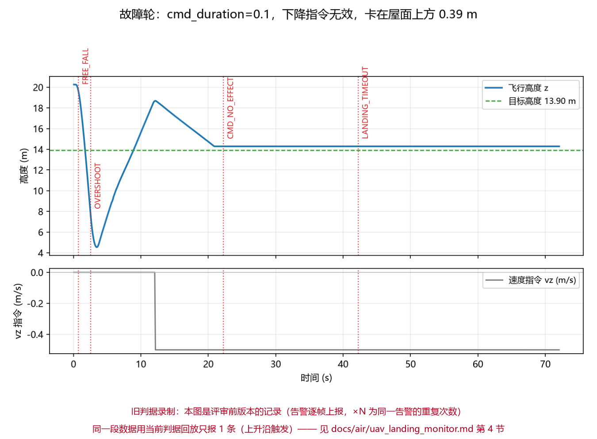
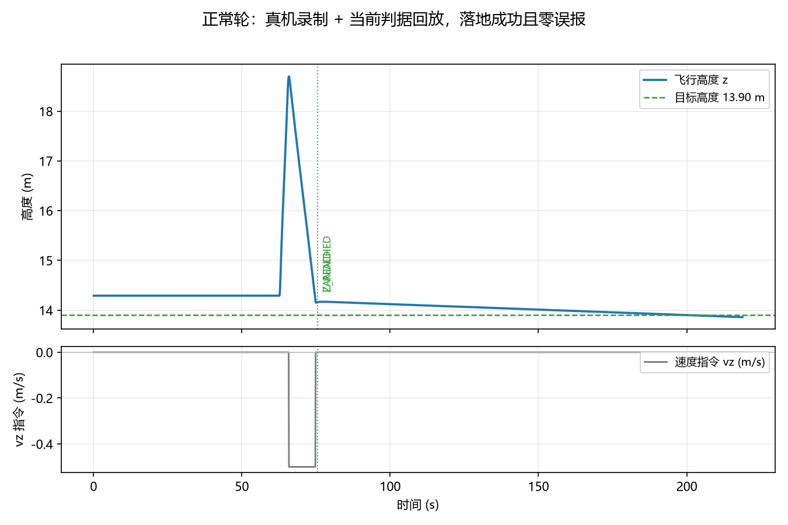

无人机降落过程监控（指令-运动一致性）
一句话：飞机"以为自己降落了"但实际悬在半空，是降落环节最危险的静默故障。这个模块只做一件事 ——
盯着 /uav/cmd_vel 下发的垂直速度和 /uav/odom 的实际高度变化，一旦"喊了不动""掉得没人管"
"超时没落地"就立刻告警并落 CSV，事后能一键出图。

1. 为什么需要这个监控
在真实 UE + AirSim + carlair_ros_bridge 上联调时遇到一个静默故障：桥接层 cmd_duration=0.1
配置下，上游连续下发 −0.5 m/s 下降指令，飞机却在屋面上方 0.39 m 处停住不动；而下游降落模块
只按"离屋面还差多少"判断，等它挪进容差就宣布 LANDED —— 日志全绿，实际没落地。
不管这个现象最后归因于桥接层的哪一处（见第 4 节的实测与待定位说明），控制链路各层之间都缺少 一次"指令与结果是否一致"的校验。本模块补上这一层：不改进任何控制算法、不发送任何控制指令， 只做"看门狗 + 记录仪"。
2. 判据
| 告警码 | 级别 | 触发条件 |
|---|---|---|
CMD_NO_EFFECT |
error | 窗口内指令积分 ∫|−vz|dt ≥ cmd_effect_min_expect_m，但实际下降量 < cmd_effect_ratio × 期望值 |
DESCEND_STALL |
warn | 已经开始下降后没有下降指令（|vz| < cmd_min_vz），窗口内高度也只变化 < descend_stall_eps_m，且仍未到目标高度 |
FREE_FALL |
error | 高度下掉速率 > free_fall_rate，且比指令快出 free_fall_cmd_slack（掉高 / 失控） |
Z_REACHED |
info | 高度进入目标 ± landing_tol_m 并稳定 landed_stable_s（"到位置了"，与上游是否松手无关） |
LANDED |
info | Z_REACHED 且上游已释放下降指令（一次完整的落地） |
CMD_NOT_RELEASED |
warn | 已到位置，但上游仍在发下降指令超过 landed_cmd_grace_s |
OVERSHOOT |
error | 已低于目标高度超过 overshoot_m（可重复触发，不是一次性） |
LANDING_TIMEOUT |
error | 从开始下降算起超过 timeout_s 仍未到位置（已经 Z_REACHED 就不再判） |
INPUT_STALE |
error | 里程计超过 stale_input_s 没有新数据 |
TARGET_UNKNOWN |
warn | 启动后 target_unknown_s 内仍拿不到落地目标高度 |
几条关键语义（都是评审提出后修正/明确的）：
- 期望位移用指令积分：
∫|−vz|dt（只累计向下的部分），不是"最后一帧速度 × 窗口长度"。 指令变化（暂停后恢复、变速、重新接管）会把观察窗起点推到变化那一刻，避免拿历史空档算期望。 - 起动宽限期只保护"一致性"判据：
descend_grace_s（默认 1.5 s）内不判CMD_NO_EFFECT， 但FREE_FALL用的是完整高度历史，照常工作。 - 告警是上升沿触发：条件持续期间只报一次，条件消失后才可能再报（另有
alert_cooldown_s）。 实测 90 s 的持续故障只产生 1 条CMD_NO_EFFECT，不会刷屏。 active只表示"仍未恢复的异常"：Z_REACHED/LANDED是一次性 info 事件，不进active， 否则看板会把"落地成功"显示成故障。- 可复位（三种触发）：落地/超时之后，只要 ① 飞机重新爬升超过
resume_climb_m、 ② 超时之后下降指令重新出现（现场重试常常在同一高度再来一次，不会爬升）、 ③ 上游下发了新的/uav/goal，reset()就会清掉本轮阶段与告警并开始新一轮， 因此一个常驻节点可以连续监控多次降落。 - 结论按"当前这一轮"算：
report()["verdict"]只看本轮告警，上一轮的失败不会把下一轮的 干净落地也拖成fail；历史轮次在report()["runs"]，累计告警在report()["summary"]。 - 到位置之后不再判超时：
Z_REACHED一旦成立，timeout_s就不再适用 —— 上游不松手有CMD_NOT_RELEASED这个更准确的告警，不该同时拖成fail + ABORTED。 - 目标高度有抖动容差：落点话题是神经网络输出，cm 级抖动很常见；变化小于
target_change_tol_m（默认 0.35 m）视为同一目标，不重新装填、不会重复报LANDED。 - 坐标只有一种：核心判据内部一律 ENU（上为正）。
frame/z_up:=false（NED）时，节点会把 高度、速度指令、目标高度三处一起换算（monitor_core.to_enu），不存在"z 换了、vz 没换"； 且target/goal_offset_m在换算成 ENU 之后才减（monitor_core.goal_target_z）—— NED 下写成"先减 offset 再取负"会让目标高度差 2 × offset。 - 不依赖
DESCEND字样：carlair_ros_bridge的/uav/status只会发READY / GOAL x y z / GOAL_DONE / GOAL_FAILED / VELOCITY / HOVER，没有DESCEND。 所以DESCEND_STALL用的是"没有下降指令 + 高度不再下降 + 还没到目标"这种可观测组合； 只有当某个桥接层真的会发DESCEND时，才用thresholds/status_descend_keywords打开状态串判据。 - 落地与"上游收手"分离：
Z_REACHED只看物理高度，LANDED才额外要求指令释放； 上游落地后不清零指令时会给CMD_NOT_RELEASED警告，而不会把整次降落误判成超时失败。 - 时钟兜底：
use_sim_time=true但/clock没来时rospy.get_time()恒为 0，会让所有 时间判据失效。节点启动时会检测时间是否在推进，不推进就自动改用单调时钟并打 ERROR 日志；/clock比本节点晚起来时，每 5 s 复查一次并自动切回。 - CSV 时间列用节点自己的单调起点（
monitor_core.CsvClock），与 core 的"每轮t_first"解耦： 自动复位不会让同一份 CSV 里的t跳回 0（否则画出来的高度曲线会往回跳）。
3. 运行
# 终端 1：桥接层
roslaunch carlair_ros_bridge main.launch host:=192.168.49.1
# 终端 2：被监控的降落模块
roslaunch rooftop_landing_nn main.launch
# 终端 3：本模块
roslaunch uav_landing_monitor main.launch csv:=/tmp/landing.csv
rosrun uav_landing_monitor main.py # 等价的前台运行
话题：
| 方向 | 话题 | 类型 |
|---|---|---|
| 订阅 | /uav/odom、/uav/cmd_vel、/uav/status |
nav_msgs/Odometry、geometry_msgs/Twist、std_msgs/String |
| 订阅（可选） | /rooftop_nn/landing_point、/uav/goal |
geometry_msgs/Point（确定落地目标高度） |
| 发布 | /uav/landing_monitor/alert |
std_msgs/String，一条告警一行 JSON |
| 发布 | /uav/landing_monitor/state |
std_msgs/String，周期状态 JSON（含仍在持续中的告警） |
常用参数（完整列表见 config/uav_landing_monitor.yaml）：
roslaunch uav_landing_monitor main.launch csv:=/tmp/l.csv
roslaunch uav_landing_monitor main.launch z_up:=false # 桥接层高度是 NED 下为正
roslaunch uav_landing_monitor main.launch target_mode:=fixed use_target_z:=true target_z:=13.9
roslaunch uav_landing_monitor main.launch timeout_s:=30 stale_input_s:=0.5
出图（同类告警会标注次数，例如 CMD_NO_EFFECT ×7）：
python3 tools/plot_report.py /tmp/landing.csv --out landing.png --title "正常降落"
测试（纯 python，不需要 ROS / 仿真器；catkin_make run_tests 也会通过 catkin_add_nosetests 跑，
文件里对 nose 暴露的入口是 test_all_scenarios）：
python3 tests/test_uav_landing_monitor_local.py # 预期 结果：110/110 通过
python3 tools/replay_csv.py /tmp/landing.csv # 把既有 CSV 喂回当前判据
4. 实测记录（并如实说明它不总是复现）
环境：Windows 宿主机 UE 5.5 + Cosys-AirSim（Blocks 场景）+ 本仓库 carlair_ros_bridge
+ rooftop_landing_nn 降落模块 + 本监控模块，全程真实运行（非离线回放）。
正常轮（cmd_duration=0.5，真机录制，下图用当前判据回放该录制）：
python3 tools/replay_csv.py landing_normal.csv # -> 结论 ok，仅有 Z_REACHED + LANDED
python3 tools/plot_report.py landing_normal.csv --alerts replay --out normal_run.png

故障轮（cmd_duration=0.1，当时飞机在屋面上方 0.39 m 处停住不动、上游仍在发 −0.5 m/s）：
这张图是评审前版本的真实记录（当时还是"逐帧报"，所以画出了 7 条同类告警），图底部已直接标注
"旧判据录制"，不要把它当成当前行为。当前版本改成 上升沿触发：同一段持续故障只会报 1 条
CMD_NO_EFFECT，随后由 LANDING_TIMEOUT 收尾，告警不再刷屏（这一点有回归用例覆盖，见
tests/ 里的"持续故障只报一次"）。
关于"飞机为什么不动"：只登记现象，不做因果结论
评审指出我原来的因果描述与桥接层代码对不上，这一点是对的，这里改成可核对的事实：
| 事实 | 说明 |
|---|---|
cmd_duration=0.1 时 4 s 只降 0.11 m；0.3 → 0.28 m；0.5 → 2.27 m |
同一架飞机、同一条 −0.5 m/s 指令，差异稳定可复现（用 AirSim 客户端脚本直接量出来的） |
cmd_vel_sub.py 控制环 20 Hz，指令新鲜时每周期重发同一条指令 |
所以"下一条命令顶掉上一条"的说法不成立：被覆盖的是同一条指令 |
| 同一配置后来复跑两次，下降恢复正常（0.49 m/s） | 说明这个现象不是必现，与飞行状态/时序有关 |
故障轮画面里 UE 曾显示 API call was not received, entering hover mode for safety |
这是 AirSim 因 RPC 调用超时进入 hover 保护：此时速度指令会被忽略 —— 与"指令在发、飞机不动"高度吻合，但目前只是线索，未做定论 |
结论：本模块的定位是发现（并且这次确实发现了：指令与高度连续 8 s 不一致）， 归因与修复属于桥接层。本 PR 不修改桥接层默认值，也没有把它写成"已修复"。
5. 和别的模块的关系（不重复造轮子）
telemetry_diagnostics：用 GRU 判遥测数据本身的统计异常（注入漂移/冻结/丢包），ROS2、偏数据层。 本模块不建模数据分布，只做控制指令与运动结果的规则一致性校验，ROS1 桥接话题，零训练、即插即用。rooftop_landing/rooftop_landing_nn：负责"落到哪里"，可能因为链路问题误以为落地了； 本模块不参与决策，只负责在它们出错时把问题喊出来。- 本模块不发任何控制指令，因此可以挂在任何桥接层/任何降落模块旁边做旁路监控。
6. 已知限制
- 规则阈值是工程经验值（
config里都可调，且启动时会打印整份生效阈值、拼错的键会 WARN）； 极端机型的加速度差异需要重新标定；起动宽限期设小了会误报、设大了会漏报"很快就卡住"的故障。 - 只监听单个载具；多机需要各自带命名空间启动一份。
- 高度用单一来源
/uav/odom，里程计本身漂移时无法自证（需要外部真值，比如动捕/RTK）。 target/goal_offset_m（默认 5 m）是把/uav/goal的安全高度折算成屋面高度的约定值， 没有校验；能收到/rooftop_nn/landing_point时不会用到它，收不到时启动日志会提示， 超时未拿到目标高度则报TARGET_UNKNOWN。- "落地"只判定到高度层面（
Z_REACHED+ 指令释放），不判断是否真的踩在屋面上—— 落点几何是否正确属于rooftop_landing*模块的职责。 - 超时后"在同一高度重试"的识别依赖下降指令重新出现这个边沿；如果上游从头到尾都没松过 下降指令，那在监控看来就是同一次连续故障（这也是符合直觉的）。
7. 第二轮评审 6 个场景的复现
下面几条都是把判据原样 import 后喂合成序列得到的（tests/ 里各有用例断言）：
1) NED + goal_offset：goal.z=-20（NED）、offset=5 -> 目标 15.00 m（旧写法算出 25.00 m）
2) 干净落地之后 active=[]（旧版本会在"仍未恢复"里列 ['LANDED', 'Z_REACHED']）
3) 到位置后上游一直不松手、跑满 100 s（timeout_s=90）：
Z_REACHED@0.7s -> CMD_NOT_RELEASED@2.7s -> CMD_NO_EFFECT@3.1s，LANDING_TIMEOUT 出现 0 次
4) 超时 ABORTED 之后同一高度重试：CMD_NO_EFFECT 重新报出，阶段回到 DESCENDING，轮次 +1
5) 落地后落点抖动 +0.02/+0.04/…（10 次）：LANDED 仍然只有 1 条，阶段保持 LANDED
6) 第 1 轮断流判 fail、第 2 轮干净落地：verdict=ok，历史轮次里保留第 1 轮 fail
附：大模型使用声明
本模块的代码、测试与文档在编写过程中使用了大模型辅助（判据设计讨论、代码与文档起草、
绘图脚本整理、以及按两轮评审意见重构判据与补充回归用例）。所有结论均来自仓库内可复现的真实运行：
tests/test_uav_landing_monitor_local.py（110 项断言，含评审提出的暂停/恢复、变速、
低高度启动、第二次降落、到位置不松手、NED 换算与 goal_offset、超时后同高度重试、落点抖动、
跨轮结论、CSV 时间列、active 语义、并发等场景）、以及第 4 节两轮 UE + AirSim
真机运行（CSV 由节点参数 monitor/csv 生成，图由 tools/plot_report.py 从该 CSV 绘制）。
作者对提交内容的正确性与完整性负全部责任。